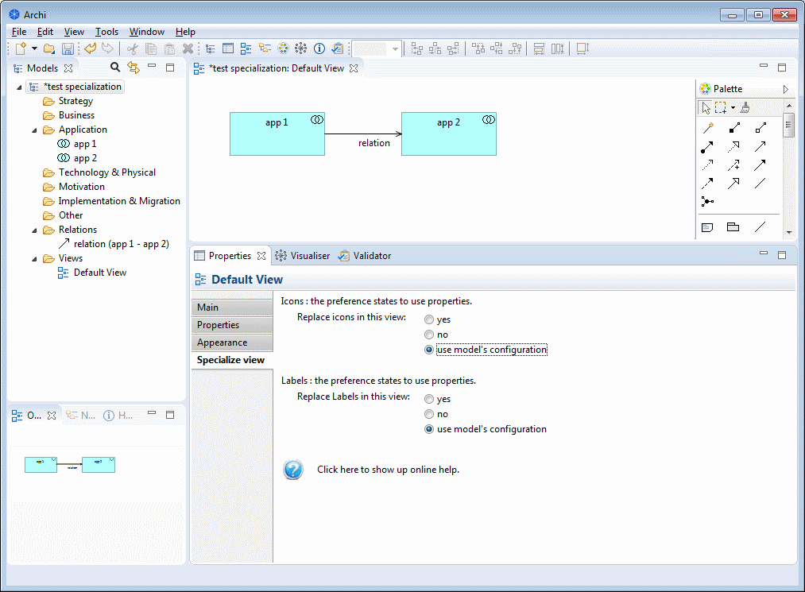
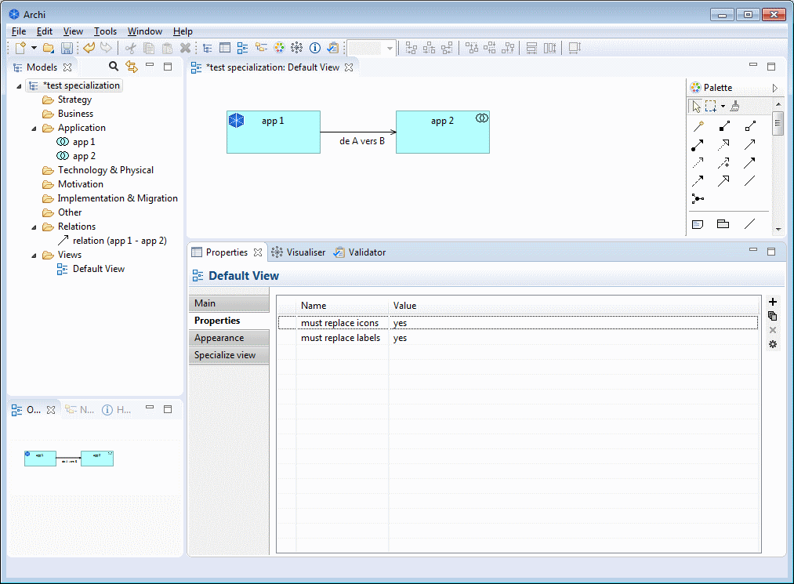

Specialization plugin
Specialize view

When a view is selected, a new "Specialize view" tab is shown in the properties window.
- Replace icons in this view
- yes → sets the value of the "must replace icons" property to "yes"
- no → sets the value of the "must replace icons" property to "no"
- use model's properties → removes the "must replace icons" property
- Replace labels in this view
- yes → sets the value of the "must replace labels" property to "yes"
- no → sets the value of the "must replace labels" property to "no"
- use views properties → removes the "must replace labels" property
It is also possible to set the properties by hand.
